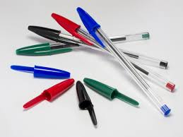

Długopis ;)
Długopis – narzędzie do pisania wynalezione w 1938 roku przez węgierskiego artystę i dziennikarza László Bíró. Po wybuchu wojny uciekł on z ojczyzny i dotarł do Argentyny, gdzie ze swoim bratem George'em (chemikiem) udoskonalali wynalazek. Pierwsza produkcja zaczęła się podczas wojny w Buenos Aires. W roku 1944 László Bíró sprzedał swoje udziały jednemu z akcjonariuszy, który zajął się produkcją na masową skalę. Była ona realizowana na potrzeby pilotów alianckich podczas drugiej wojny światowej, ponieważ długopisem można pisać bez względu na zmiany ciśnienia atmosferycznego[1].
Długopis składa się z obudowy oraz rurki wypełnionej gęstym tuszem i zakończonej obsadką. W obsadce umieszczona jest kulka o średnicy około 1 mm. Podczas pisania kulka toczy się po papierze rozprowadzając równomiernie tusz.
Długopis często używany jest jako element promocji i reklamy Kulka jest osadzona w gnieździe, które umożliwia jej swobodne obracanie i zapobiega wypadaniu. Pomiędzy kulką a gniazdem znajduje się niewielka przestrzeń, przez którą wypływa tusz. Przestrzeń ta jest na tyle mała, że jeśli długopis nie jest używany, to siły kapilarne utrzymują tusz w środku. Takie same rozwiązania techniczne użyte są również w innych urządzeniach — np. w obudowie antyperspirantów „w kulce”.
Długopisy dzielimy na olejowe i żelowe oraz niezmazywalne i zmazywalne.